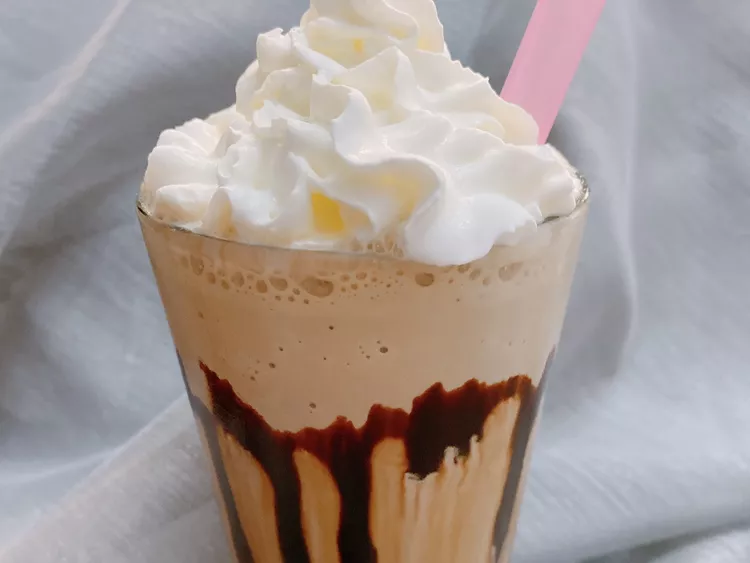

Milkshake

Description
You might just want this coffee milkshake for those mornings when you struggle with the antiquated practice of losing an hour each spring—the jolt of caffeine sure wakes me up!
Ingredients
- 1 shot espresso
- 4 ounces milk
- 3 tablespoons malted milk powder
- 1 3/4 cup coffee ice cream
- 1 tablespoon dark chocolate syrup, such as Torani®, or as needed (optional)
- 2 tablespoons whipped cream, or as needed (optional)
Directions
- Pour cooled espresso shot and milk into a high-powered blender, such as a Vitamix. Add the malted milk powder and ice cream. Secure lid; blend on High until smooth, about 45 seconds.
- Drizzle syrup on the inside of a glass. Pour milkshake into glass. Add whipped topping.
Source